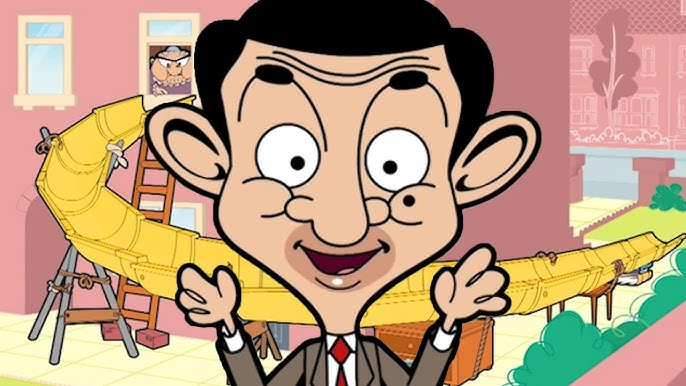

Mr. Bean is a British sitcom created by Rowan Atkinson and Richard Curtis, produced by Tiger Aspect Productions and starring Atkinson as the eponymous title character. The sitcom consists of 15 episodes that were co-written by Atkinson alongside Curtis and Robin Driscoll; the pilot episode was co-written by Ben Elton. The series originally aired on ITV, beginning with the pilot episode on 1 January 1990[1] and ending with "The Best Bits of Mr. Bean" on 15 December 1995. Based on a character developed by Atkinson while he was studying for his master's degree at the University of Oxford, the series centres on Mr. Bean, described by Atkinson as "a child in a grown man's body", as he solves various problems presented by everyday tasks and often causes disruption in the process.[2] The series has been influenced by physical comedy actors such as Jacques Tati and those from early silent films.[2] During its original five-year run, Mr. Bean was met with widespread acclaim and attracted large television audiences. The series was viewed by 18.74 million viewers for the episode "The Trouble with Mr. Bean"[3] and has received a number of international awards, including the Rose d'Or. The series has since been sold in 245 territories worldwide. It has inspired an animated spin-off and two theatrical feature-length films along with Atkinson reprising his role as Mr. Bean for a performance at the London 2012 Summer Olympics opening ceremony, television commercials and several sketches for Comic Relief. The programme carries strong appeal in hundreds of territories worldwide because, in addition to the acclaim from its original run, it uses very little intelligible dialogue, making it accessible to people who know little or no English. Origin The character of Mr. Bean was developed while Rowan Atkinson was studying for his master's degree in electrical engineering at The Queen's College, Oxford. A sketch featuring Bean was shown at the Edinburgh Fringe in the early 1980s.[2] A similar character called Robert Box, also played by Atkinson, appeared in the one-off 1979 ITV sitcom Canned Laughter which also featured routines used in the motion picture in 1997.[4] One of Bean's earliest appearances occurred at the "Just for Laughs" comedy festival in Montreal, Quebec, Canada, in 1987. When programme coordinators were scheduling him into the festival programme, Atkinson insisted that he perform on the French-speaking bill rather than the English-speaking programme. Having no French dialogue in his act at all, programme coordinators could not understand why Atkinson wanted to perform on the French bill instead. As it turned out, Atkinson's act at the festival was a test platform for his character and he wanted to see how his character's physical comedy would fare on an international stage with a non-English speaking audience.[5] The character's name was not decided until after the first episode had been produced; a number of other vegetable-influenced names such as "Mr. Cauliflower" were explored.[6] Atkinson cited the earlier comedy character Monsieur Hulot, created by French comedian and director Jacques Tati, as an influence on the character.[7] Atkinson also cited the influence of Peter Sellers, who had previously played similar "fumbling fool" characters, notably Hrundi Bakshi in The Party (1968) and Inspector Clouseau in The Pink Panther films.[8] Stylistically, Mr. Bean is also similar to early silent films, relying purely upon physical comedy with Mr. Bean speaking very little dialogue (although like other live-action sitcoms during this period, it featured a laugh track). This has allowed the series to be sold worldwide without any significant changes to dialogue.[5][9] In November 2012, Atkinson told The Daily Telegraph of his intentions to retire the character, stating that "someone in their fifties being childlike becomes a little sad."[10][11] In 2016, however, Atkinson changed his mind by saying that he would never retire playing Mr. Bean.[12]
